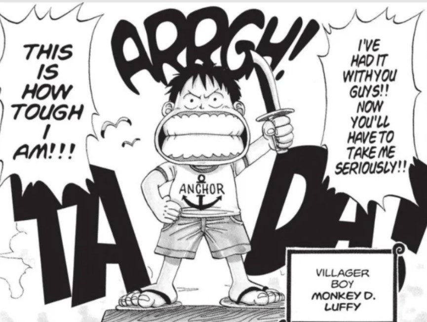

Chapter 1
Synopsis

One Piece Chapter 1, titled "Romance Dawn," introduces Monkey D. Luffy, a young boy who dreams of becoming the King of the Pirates.
Luffy accidentally eats the Gum-Gum Fruit, granting him the ability to stretch his body like rubber but losing the ability to swim. The chapter showcases Luffy's admiration for the pirate Shanks and culminates in a dramatic scene where Shanks sacrifices his arm to save Luffy from a sea monster. Before departing, Shanks entrusts Luffy with his straw hat, setting the stage for Luffy's future adventures.